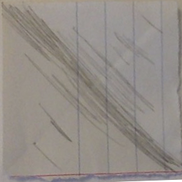

bm.raccoons.lv/v/0.0.2 spēles prototipa adrese. Spēles mērķis: grozot platformas (prototipā 2 platformas, plānotas no vienas līdz 5), jāsaliek spoguli tā, lai gaisma iespīd centrā (sarkana bumba).
Šī ir pārlūka 3d spēle un tiks publicēta draugiem.lv facebook.com.
Viena no idejām (pie kuras nav obligāti jāpieturās) zīmēt spēli kā burtnīcas spēli.
Piemēram spogulis šobrīd izskatās šādi 
Kad lietotājs uzbrauc uz platformas, parādās bultiņas, kurā virzienā griezīs platformu + varētu visa platforma iezīmēties kādā krāsā.
Teksti uz pogām jāveido ar kādu fontu (nevis zīmētus), lai vēlāk nebūtu problēmas mainīt tekstus vai pievienot citas valodas.

Pats pirmais līmenis kā apmācība sastāv no vienas platformas.
Jāapraksta katrs objekts (tooltips):
 Divi skaitītāji: sekundes (pa kreisi) un soļi (pa labi). "+" vietā attiecīga ikona.
Divi skaitītāji: sekundes (pa kreisi) un soļi (pa labi). "+" vietā attiecīga ikona.

 114x81 bildīte no līmeņa. Pēdējie 4 līmeņi slēgti, nepieciešama ikoniņa.
114x81 bildīte no līmeņa. Pēdējie 4 līmeņi slēgti, nepieciešama ikoniņa.